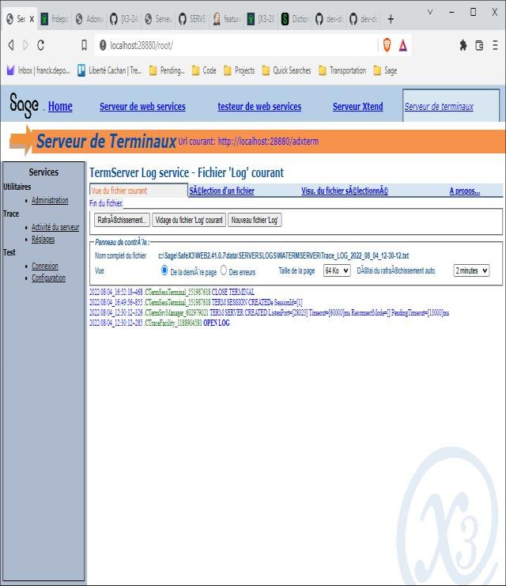
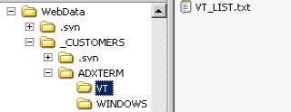

Documentation technique du serveur RF
Serveur pour Terminaux Radio Frequency
Sommaire
- Installation et configuration
- 1.1. Installation
- 1.2. Vérification des licences
- 1.3. Configuration
- 1.4. Autres réglages
- 1.5. Paramètres de la console d’administration
- 2. Fenêtre locales
- 2.1. Choix de l’application X3
- 2.2. Ecran de login X3
- 2.3. Connexion automatique à une application X3
- 2.4. Commandes adonix
- 2.5. Personnalisation
- 3. Mode expert
- 3.1. Accéder au mode expert
- 3.2. Ecran d’accueil
- 3.3. Ecran de configuration VT
- 3.4. Ecran de configuration de la trace
- 3.5. Informations sur la session courante
- 3.6. Liste des sessions utilisateur
- 3.7. Ecrans de test des formats X3
- 4. Protocoles et émulateurs
- 4.1. Les fichiers de configuration
- 4.2. Sélection des fichiers de configuration
- 4.3. Fichier VT_LIST.txt
- 4.4. Fichiers des attributs de présentation .cfg
- 4.5. Fichiers .evt
- 5. Ergonomie des écrans
- 6. Reconnexion automatique
- 6.1. Fonctionnement du mode reconnexion
- 6.2. Identification par l’adresse IP
- 6.3. Identification par le code utilisateur/code langue X3
- 6.4. Identification par un identifiant envoyé par le terminal
- 7. Activation de la trace
- 7.1. Emplacement du serveur de trace
- 7.2. Lancement du serveur de trace
- 7.3. Activation de la trace du serveur RF
- 8. Log de l’activité du serveur
- 9. Messages d’erreur
- 10. Annexe1 – Personnalisation des touches clavier
- 11. Annexe2 – Personnalisation du mapping de caractère
- 12. Emulateurs et configuration Unicode/UTF-8
1. Installation et configuration
1.1. Installation
Le serveur RF est un composant (web application) du serveur X3WEB.
Il est installé automatiquement lorsque vous installez le serveur X3WEB.
1.2. Vérification des licences
Il est conseillé de vérifier que vous disposez d’un nombre suffisant de licences de type terminal avant de configurer le serveur RF.
Voir menu X3 : Développement\Utilitaires\Vérifications\Visu licence
1.3. Configuration
Configuration du serveur X3WEB
Le serveur X3WEB ne peut démarrer qu’après avoir saisi les paramètres obligatoires :
Saisir le port d’écoute http du serveur HTTP Apache pour le web natif.
{kind=link}
Le serveur X3WEB dispose d’une console d’administration web accessible via un navigateur par l’url
http://ServerHostName:28880. Le port du serveur http est 28880 par défaut mais il peut être modifié via la Console.
Le redémarrage du serveur est automatique après mise à jour des paramètres.

Configuration du serveur RF
Le serveur RF ouvre un port d’écoute TCP N°28023 (par défaut) utilisé pour les connexions des terminaux.
Ce port peut être déjà ouvert par une autre application (serveur telnet sous Unix/Linux).
Exemple sous Linux – Le message suivant est affiché si le port 28023 et déjà utilisé par le serveru FTP du système.

Il est conseillé de vérifier la disponibilité du port TCP utilisé par le serveur RF
(Ex : commande netstat –a sous Windows).
Modifier le port d’écoute du serveur RF via les paramètres avancés de la console si il est déjà utilisé par une autre application

Le redémarrage du serveur est automatique après mise à jour des paramètres.
Vérification du bon fonctionnement du serveur
Lancez un émulateur, par exemple la commande telnet sous Windows (telnet ServerHostName) et vérifiez que la fenêtre ci-dessous s’affiche. Cette fenêtre est vide car aucune solution/dossier n’a été publié.

On peut aussi vérifier le log du serveur RF via la console d’administration Web.

En cas d’erreur au démarrage du serveur RF (port occupé par exemple) la ligne entourée en rouge n’est pas affichée.
Seule la ligne OPEN LOG est affichée.
Publication des solutions/dossiers
La publication des applications X3 est effectuée par la console d’administration.
Le fenêtre de sélection des applications présente toutes les applications publiées, indifféremment du fait qu’elles soient ou non accessibles par un terminal VT.
Configuration du serveur RF sous Linux
Le message suivant est affiché si vous utilisez le port d’écoute N°22. Il faut choisir une autre N° de port. 
1.4. Autres réglages
Taille des écrans caractères
Le serveur gère deux types de fenêtre (au sens X3) :
- Les fenêtre locales au serveur RF
- Les fenêtre X3
Tous les écrans caractères sont construits par le serveur sur la base d’une description XML de la fenêtre qui contient :
- la taille en nombre de lignes et nombre de caractères par colonne
- les caractéristiques des écrans, des blocs et des champs
- la liste des boutons et des actions associées
- les menus locaux
- la liste des styles utilisés
Fenêtres X3
La description est générée par le serveur X3 lors de la validation d’un écran.
Elle est ensuite mise à disposition du serveur RF via un mécanisme de ‘cache’ identique à celui du serveur Web natif.
La taille de l’écran caractère est une propriété de l’écran X3. Elle peut varier d’une fenêtre à l’autre mais doit être identique pour tous les écrans d’une même fenêtre.
Elle est généralement identique pour toutes les fenêtres d’une application X3.
Pour l’application GEODE, la taille a été fixée à 8 lignes et 20 colonnes.

Particularité des fenêtres X3 pour les applications VT :
l’écran d’entête est présent dans les descriptions X3 mais toujours vide car il n’est pas pris en compte par le serveur RF.
Fenêtres Locales
Les descriptions des fenêtres locales sont stockées dans le sous répertoire TOOLS\X3TERM\WINDOWS du dossier d’installation TOOL du serveur X3WEB. Il existe un fichier de description par langue (FRA et ENG dans la version
courante).
Il est possible d’ajouter une nouvelle langue en copiant le dossier ENG sous le code langue souhaité et en modifiant les
textes (attributs CAP) dans les fichiers XML.
La taille des écrans locaux (8x20 par défaut) est stockée dans la description (attributs NLIT="8" NCOT="20").
Les fenêtres dont les descriptions sont stockées sur le serveur RF sont les suivantes :
- Le choix des solutions/applications X3
- Le login
- Les fenêtres X3 _CHOOSE et _SEL
- Les fenêtres du mode expert
Choix du code langue
A l’ouverture d’une nouvelle session utilisateur le serveur RF doit disposer d’un code langue pour pouvoir accéder à la
description de la fenêtre locale à afficher (choix des applications ou fenêtre de login). Le code langue par défaut est un
paramètre modifiable via la console d’administration (paramètre avancé session.language).
A partir du moment où l’utilisateur s’est connecté au serveur X3, le serveur RF utilisera le code langue sélectionné par l’utilisateur pour lire les descriptions des fenêtres locales (retour au login, mode expert…).
Si aucune description n’est trouvée pour le code langue sélectionné, le serveur RF choisira le code langue ENG.
1.5. Paramètres de la Console d’administration
Ces paramètres sont accessibles via les paramètres avancés de la console d’administration du serveur X3WEB.
Tous les paramètres sont visibles sous l’arborescence term.ctermserversvc.
Toute modification des paramètres via la console est suivie d’un arrêt/redémarrage complet du serveur X3WEB (Web natif, Web services, Serveur RF…).
Paramètre Type Description
Paramètres généraux
deamon.port Entier Port d’écoute TCP pour les terminaux.
23 par défaut
session.videoterminal String Protocole par défaut pour les sessions VT.
Nom du fichier de configuration VT par défaut sans l’extension.
L’utilisateur peut modifier le protocole session pour
l’adapter à son terminal via la commnde ‘CTRL P’ (Voir
VT_LIST.txt)
VT220 par défaut – VT100 si vide
Valeurs prédéfine dans TOOLS\X3TERM\VT\VT_LIST.txt
VT100
VT100_TUNE
VT100_WINDOWS
VT100_HYPERTERM
VT220=VT220
session.expertpwd String Mot de passe pour accéder au mode expert.
adonix par défaut
session.language Langue Code langue par défaut pour les sessions. Le code
langue utilisateur est mis à jour lorsque
l’utilisateur clique sur le bouton OK de la fenêtre de
LOGIN.
Vide par défaut - Mis à jour lors de l’installation
avec le code langue saisi dans l’installer
session.testdelay Ms Période d’envoie en millisecondes de la séquence de
test de validité de la socket TCP. Utilisé pour
détecter les ruptures de connexion avec le terminal.
Lorsqu’une rupture de connexion est détectée la
session est arrêtée ou mise en attente en fonction du
mode de reconnexion.
Séquence envoyée - VT_100.fcg - misc.socket.check=.x00
Période 5000 millisecondes par défaut
session.timeout Ms Durée maximale d’inactivité autorisée pour les
sessions VT. Passé cette durée, la session est
automatiquement fermée par le serveur.
180000 millisecondes par défaut
session.monitor.waitimeout Ms Durée maximale d’un état transitoire pour une session
(WaitPending, WaitActive,WaitClose). Passé cette durée
la session est automatiquement fermée par le serveur.
10000 millisecondes par défaut
session.monitor.sleeptime Ms Durée de l’arrêt la tâche de contrôle des session.
Définit la période de contrôle de l’activité des
sessions par le serveur.
2000 millisecondes par défaut
session.checktermmode on/off Active la détection automatique du protocole du
terminal par le serveur (envoie d’un séquence VT de
type ‘report’).
Si le terminal renvoie une réponse qui contient le
protocole utilisé, le serveur compare ce protocole à
celui de la session et affiche l’écran de sélection du
protocole si le protocole client et inférieur à celui
de la session (Ex : VT100 pour une session en mode
VT220).
off par défaut
Ne fonctionne qu’avec les protocoles VTxxx
Connexion automatique à une application X3
session.solution Vide Code de la solution.
session.folder Vide Code du dossier X3.
session.hostname Vide Hostname du serveur de connexion.
session.port Vide Port TCP du serveur de connexion.
Divers
misc.stopleftliskey Entier Code de l’événement qui permet d’arrêter le chargement
d’une liste gauche. La touche clavier associée à cet
événement est configurée dans le ficher VT_100.evt .
11 par défaut pour la touche ENTER - KEY_ENTER
misc.fillingchar Vide Caractère de remplissage des écrans.
Vide pour espace
Affichage
session.nbcolumns Entier Nombre de colonnes des écrans pour les fenêtres non
gérées par X3 (locales).
20 par défaut
session.nblines Entier Nombre de lignes des écrans pour les fenêtres non
gérées par X3 (locales).
8 par défaut
disp.screen.title on/off Affichage des titres des écrans.
off par défaut
l’écran/précédent.
disp.screen.switch on/off Passage automatique à
On par défaut
disp.btn.filling Vide Caractère de remplissage des boutons.
Vide pour espace
disp.btn.justif Left Justification des libellés des boutons.
right Left par défaut
center
disp.btn.max Entier Nombre de boutons de fenêtre autorisés.
4 par défaut
disp.tab.circular on/off Scrolling horizontal tournant pour les tableaux.
Off par défaut
disp.choose.title on/off Affichage du titre pour la fenêtre _CHOOSE.
Off par défaut
disp.selbox.title on/off Affichage du titre pour la fenêtre _SEL.
Off par défaut
Reconnexion
reconnect.mode IP Mode de reconnexion des sessions VT.
TERMID Vide par défaut – Reconnexion désactivée
X3USER
reconnect.pending.timeout Ms Durée maximale de stockage des sessions en attente de
reconnexion. Passé cette durée la session est
automatiquement fermée par le serveur.
1800000 millisecondes par défaut
reconnect.termid.timeout Ms Durée maximale d’attente de réception du terminal ID à
l’ouverture de la session. Utilisé par le mode de
reconnexion TERMID. Passé cette durée, la réception
d’un TERMID n’est pas prise en compte.
2000 millisecondes par défaut
Affichage des tableaux en mode fiche
tabform.optimize on/off Optimisation du nombre d’écrans en affichant plusieurs
colonnes sur une même ligne
Off par défaut
tabform.titles on/off Affichage des titres des colonnes
On par défaut
## 2. Fenêtre locales
2.1. Choix de l’application X3
Par défaut, la première fenêtre affichée par le serveur RF présente la liste des ‘solutions/dossiers/Serveurs de connexion’ qui ont été publiés sur le serveur X3Web via la console d’administration.
Utiliser les flèches haut/bas et droite/gauche pour la navigation dans le tableau.
Attention:
La liste présente toutes les applications publiées sur ce serveur, indépendamment du fait qu’elles soient ou non accessible par un terminal VT.
2.2. Ecran de login X3
L’écran de login permet de saisir le code utilisateur/code langue X3.

Le code langue est représenté par un menu local (flèche haut/bas pour sélectionner le code langue).
La liste des codes langues disponibles ainsi que les ‘Regional settings’ associés au code langue sont stockés dans des fichiers locaux au serveur MISC\LANGS.xml et MISC\INTLSETTINGS.xml.
2.3. Connexion automatique à une application X3
Ce mode de connexion permet de sélectionner automatiquement une application X3 pour tous les utilisateurs qui se connectent au serveur et d’accéder directement à la mire de login X3.
Les paramètres console ci-dessous permettent de définir l’application X3 :
term.ctermconfig.session.solution - term.ctermconfig.session.folder term.ctermconfig.session.hostname - term.ctermconfig.session.port
Renseigner ces paramètres en recopiant les données affichées dans l’écran de choix de
l’application (en particulier le hostname saisi doit être identique à celui affiché).
Si le serveur ne trouve pas l’application dans la liste des applications publiées sur le serveur X3WEB il affiche la fenêtre de sélection des applications.
Si la connexion automatique est activé une MessageBox est affichée lorsque l’utilisateur ferme la fenêtre de login pour quitter l’application. L’utilisateur n’a pas accès à la liste des applications (sauf si le mode expert est activé).
2.4. Commandes Sage X3
Le serveur RF sait identifier et traiter des séquences de caractères particulières ou séquences Sage X3 utilisés pour passer des informations du terminal vers le serveur. Cette séquence peut être comparée aux paramètre d’une URL http.
Une séquence X3 commence par ESC[adx[ et se termine par ].
La structure du contenu de la séquence est de type ‘Query string http’.
Paramètres de connexion
L'envoi de la séquence suivante permet d’activer la trace, de sélectionner une application et d’afficher directement sur la mire de logon :
ESC[adx[te=VT220&so=DEVSOPHIA&fo=SUPERV&ho=sodaix01&po=1940&us=VT&pwd=&sd=on
&lg=FRA&to=on&th=fdalbo&tp=1515&tl=9]
Début de la séquence
ESC[adx[
Protocole terminal
te -> PROTOCOLE_EMULATEUR – Ex VT220 – VT100_TUNE…
Coordonnées de l'application
so -> Solution
fo -> Dossier
ho -> Hostname
po -> N° de port
Coordonnées utilisateur
Mise à jour des champs de l’écran logon - Pas de logon automatique
us -> Code utilisateur
pwd -> Password - Désactivé
lg -> Code langue
Divers
Affichage de la liste des solutions
off indique la fermeture de la session sur FIN logon
sd -> on/off
Trace
Activation de la trace
to -> on/off
th -> serveur de trace : hostname
tp -> serveur de trace : N° de port
tl -> serveur de trace : Niveau (Level) - 0 (off) – 9 (max)
Terminal ID
Utilisé uniquement si me mode de reconnexion TERMID est activé
id -> Identifiant du terminal – Chaîne de caractères unique par terminal
Fin de la séquence
]
Cette séquence peut être envoyée par le terminal soit par une MACRO soit en configurant l’émulateur pour envoyer une séquence de caractère lors de la connexion.
Exemple pour l’émulateur TUNE (Macro)
Hide sleep 0.5 Send "\e[adx[te=VT220&so=GEODEV&fo=GX140&ho=aydaix03.acy.adx&po=6000&us=VT&pwd=&lg=FRA&sd=on&t o=off&th=fdalbo&tp=1515&tl=9]" Display Return
Note pour les solutions configurées avec LoadBalancer/VIP:
Les informations passées en arguments tels que ho= et po= (Ex: aydaix03.acy.adx&po=6000) seront traités differemment si un serveur VIP a été configuré.
Si le serveur ADC trouve la solution avec la totalité des parametres, il basculera directement sur la fenêtre de login.
S’il ne la trouve pas :
- Si la solution n'est pas configurée avec un serveur VIP il affichera la fenêtre de sélection des dossiers.
- Si la solution est configurée et liée à un LoadBalancer/VIP, les parametres ho=runtime&po=port seront ignorés et remplacés par les valeurs du serveur VIP.
Exemple:
Une solution LOCALGEODE est configurée avec deux Runtimes (hostname FRPO402328 et ports 20124 et 20125), sur un serveur VIP FRPO402328:30000. La macro demande la connexion au runtime ho=FRPO402328&po=20125.
Send: \033[adx[so=LOCALGEODE&fo=SEEDWH&ho=FRPO402328&po=20125&id=YT11.&us=.&lg=FRA&sd=on]
Les valeurs des parametres ho= et po= sont ignorés et remplacés par l'adresse du serveur VIP.
INFOS: ermX3ApplicationList_1809| getX3App| . Application=[LOCALGEODE] Folder=[SEEDWH] is a VIP Runtime Solution. Server FRPO402328:20125 is ignored and replaced by FRPO402328:30000
Fonctionnement valide depuis la Console X3 version 2.57 et JavaWeb version 2.42.
Se reporter à la documentation de la "Console de Configuration" X3 pour plus d'informations sur la configuration des LoadBalancer/VIP avec VT100 ADC Server.
2.5. Personnalisation
Uniquement en version >= 16w_105.
Pour personnaliser les fenêtres locales il suffit de copier le fichier de description xml de la fenêtre de WebTools\TOOLS\ADXTERM\WINDOWS vers le répertoire WebData\_CUSTOMERS\ADXTERM\WINDOWS.
Il faut créer les répertoires si ils n’existent pas.
Modifier le contenu du fichier (taille des lignes et des colonnes) pour modifier la fenêtre.
WebData est le dossier d’installation des "données" / "data" du serveur X3WEB.
WebTools est le dossier d’installation des "outils" / "tools" du serveur X3WEB.
Exemple pour SOLUTIONS.xml
80 colonnes et 20 lignes.CODECODE CODExml
<WIND NAM="SOLUTIONS" NLIT="20" NCOT="80">
<SCRN PLIT="0" PCOT="0" NLIT="20" NCOT="80" CAP="cap.applst" TIT="1" TIAL="1">
<FRM PLIT="1" PCOT="0" NLIT="18" NCOT="80" COL="4" TIT="1" TIAL="2">
<GCO NAM="SOL" RNK="1" NCOT="15" AFLT="15" TYP="6" TDO="7" MAF="2" CAP="cap.sol"/>
<GCO NAM="FLDR" RNK="2" NCOT="15" AFLT="15" TYP="6" TDO="7" MAF="2" CAP="cap.folder"/>
<GCO NAM="HOST" RNK="3" NCOT="40" AFLT="40" TYP="6" TDO="7" MAF="2" CAP="cap.host"/>
<GCO NAM="PORT" RNK="4" NCOT="7" AFLT="7" TYP="6" TDO="7" MAF="2" CAP="cap,port"/>
</FRM>
</SCRN>
<BOU NAC="1" XID="1" CAP="btn.ok" BTX="OK"/>
<BOU NAC="2" XID="2" CAP="btn.end" BTX="END"/>
</WIND>
3. Mode expert
Le mode expert est constitué d’un ensemble de fonctions accessibles via un mot de passe. Les écrans du mode expert
sont gérés par le serveur RF et non pas par le serveur X3.
3.1. Accéder au mode expert
Touche clavier Ctrl+E

Modification du mot de passe via la console d’administration
# Mode expert - mot de passe - Def=adonix term.ctermconfig.session.expertpwd=adonix
3.2. Ecran d’accueil
Ver : Version du serveur RF Dat : Date de la version du serveur RF Win : ID de la fenêtre courante Scr : ID de l’écran courant Fld : ID du champ courant (focus) Fmt : Format X3 associé au champ courant Next: Information sur la session VT : Ecran de configuration VT Tra.: Ecran de configuration de la trace
3.3. Ecran de configuration VT
La touche F2 (VT) permet de modifier la configuration VT par défaut (attribuée par le serveur) de la session utilisateur.

Mode : Nom du fichier de configuration (voir § Protocoles et émulateurs) de la session.
Utiliser le flèches haut et bas pour le modifier
Test : Active/Désactive le mode test des séquences VT
Ok : Ferme la fenêtre et valide la saisie
Fin : Ferme la fenêtre et conserve les réglages originaux
La touche TEST (F3) permet d’activer/désactiver le mode test pour :
- connaître le protocole utilisé par l’émulateur (si l’émulateur répond aux commandes VT de type ‘Report’)
- afficher les séquences VT associées aux touches du clavier.
L’écran ci-dessous a été obtenu en activant le mode TEST et en appuyant sur la touche F1.
Il indique que l’émulateur est configuré avec le protocole VT220 et affiche la séquence VT envoyée au serveur par le terminal lorsque l’utilisateur appuie sur la touche F1.
Cet écran est très utile pour créer de nouveaux fichiers de configuration, adaptés aux terminaux RF.
3.4. Ecran de configuration de la trace
En cas d’erreur le service HotLine Sage peut être amené à demander à l’utilisateur d’activer la trace du serveur afin d’obtenir plus d’informations sur cette erreur.

Host : Hostname ou adresse IP de la machine sur laquelle est lancé le serveur de trace Port : N° du port TCP d’écoute du serveur de trace Niv. : Niveau de la trace (‘Trace off’ pour désactiver la trace) Ok : Ferme la fenêtre et valide la saisie Fin : Ferme la fenêtre et conserve les réglages originaux Voir chapitre ci-dessous ‘Activation de la trace’.
Voir chapitre ci-dessous ‘Activation de la trace’.
3.5. Informations sur la session courante

Recx : Mode de reconnexion et d’identification de la session utilisateur
NONE : Reconnexion désactivée
IP : Reconnexion activée – Identification sur adresse IP
TERMID : Reconnexion activée – Identification sur ID envoyé par le terminal
X3USER : Reconnexion activée – Identification sur code user X3 et code langue
ID : Identifiant de la session interne au serveur
IP : Adresse IP du terminal vue par le serveur RF
USER : Code utilisateur X3 / Code Langue
TERM : Id du terminal – NONE si aucun ID n’a été reçu par la session
List : Affiche la liste des sessions en cours
Next : Test des formats X3
3.6. Liste des sessions utilisateur
Affiche la liste des sessions utilisateur. Utiliser les flêches haut/bas et gauche/droite pour se déplacer dans la liste.

Status : Etat de la session
Active : En cours d’utilisation
Pending : En attente de reconnexion
ID : Identifiant de la session
* indique la session courante
Elapsed : Temps écoulé depuis le dernier changement d’état de la session
IP : Adresse IP de la session vue par le serveur RF
X3 User : Code utilisateur/Code langue X3 – NONE si non connecté à X3
Terminal ID : Identifiant du terminal – NONE si aucun identifiant
Date : Date d’ouverture de la session
Heure : Heure d’ouverture de la session
X3 Folder : Dossier X3 – NONE si non connecté à X3
X3 Host : Hostname du serveur de connexion X3 – NONE si non connecté à X3
X3 Port : Port TCP du serveur de connexion X3 – NONE si non connecté à X3
Disc : Déconnecte la session sélectionnée
Status pending si reconnexion active sinon ferme la session
Utilisé pour tester les modes de reconnexion
Refr : Refresh de la liste
Kill : Fermeture de la session sélectionnée
En mode fiche (CtrlF) :

3.7. Ecrans de test des formats X3

4. Protocoles et émulateurs
Le protocole de base utilisé par le serveur RF pour communiquer avec les terminaux embarqués est le VT100.
Comme il s’agit d’un protocole très basique qui ne gère pas tous les attributs nécessaires à une bonne présentation des écrans, nous avons autorisé l’utilisation du protocole VT220 qui est disponible sur la plupart des terminaux.
Le protocole définit :
- les séquences de caractères que le serveur doit envoyer au terminal pour afficher un écran
- les séquences de caractères que le serveur reçoit lorsque l’utilisateur appuie sur une touche clavier
Pour une même version de protocole VT (ex VT220) nous avons noté des différences entre les émulateurs, différences qui concernent aussi bien les attributs disponibles que les codes des séquences de caractères associées aux touches clavier.
Afin de permettre au serveur RF de s’adapter à tout type de terminal nous avons mis en place des fichiers (texte) qui permettent de configurer les attributs de présentations et les séquences de caractères par type de protocole et par émulateur.
4.1. Les fichiers de configuration
Il existe deux types de fichier :
- Fichiers de configuration des attributs de présentation .cfg
- Fichiers de configuration des séquences de caractères associées aux touches clavier .evt
Le nom du fichier est constitué de deux parties séparées par ‘_’ :
- Le type de protocole
- Le nom de l’émulateur
Seul le nom du protocole est obligatoire.
Nom du fichier : PROTOCOLE_EMULATEUR.
Ex : VT100, VT100_HYPERTERM, VT220
Les fichiers sont stockés dans le sous-répertoire TOOLS\X3TERM\VT du répertoire d’installation TOOL du serveur X3WEB.
Attention :
L’application d’un patch sur le serveur X3WEB peut remplacer les fichiers de configuration VT.
Il est conseillé :
- d’utiliser ses propres fichiers plutôt que de modifier les fichiers existants
- d’effectuer une sauvegarde des fichiers VT_LIST.txt et des fichiers de configuration modifiés avant d’appliquer le patch
- de vérifier le contenu en comparant les fichiers texte après l’application du patch
4.2. Sélection des fichiers de configuration
Le serveur RF n’est pas en mesure de pouvoir identifier automatiquement le type de terminal lors de la connexion.
Il est donc nécessaire de configurer le serveur RF pour définir une configuration Protocole/Emulateur par défaut. Cette configuration sera utilisée pour tous les terminaux qui se connectent au serveur. L’utilisateur a la possibilité de modifier ce paramètre via le mode expert.
Configuration par défaut modifiable via la console d’administration :
#Default VT protocol - VT220 VT100... term.ctermconfig.session.videoterminal=VT220
L’écran de configuration VT en mode expert (menu local Mode) permet de sélectionner un fichier de configuration.
La commande ‘CTRL P’ permet de sélectionner le protocole sans avoir à passer par le mode expert.
Le menu local Mode est mis à jour avec le contenu du fichier VT_LIST.txt

4.3. Fichier VT_LIST.txt
Ce fichier contient la liste des protocoles/émulateurs gérés par le serveur.
Cette liste est affichée dans l’écran de configuration VT (menu local) et permet de sélectionner le type de terminal utilisé.
Format : Nom du ficher (.cfg ou .evt)=Libellé pour l'affichage # VTCONFIG WINDOW - VT MODE LOCAL MENU - KEY=LABEL VT100=VT100 VT100_TUNE=VT100_TUNE …
Le fichier VT_LIST.txt est remplacé lors des mises à jour du serveur X3WEB.
Personnalisation version inférieure à 16w_105
Pour personnaliser la liste des terminaux il est recommandé de créer un fichier VT_LIST_CUSTOM.txt et d’ajouter la liste des terminaux à présenter dans la liste de sélection.
Pour ajouter un nouveau terminal :
- Créer les fichiers .cfg et/ou .evt pour ce terminal
Il est recommandé, mais non obligatoire, de choisir un nom suffixé par CUSTOM pour s’assurer que ce fichier ne sera pas remplacé par une procédure de mise à jour (Ex : VT220_USA_CUSTOM.cfg).
- Ajouter une nouvelle ligne dans VT_LIST_CUSTOM.txtVT220_USA_CUSTOM=VT220
Personnalisation version supérieure à 16w_105
Pour personnaliser les réglages il suffit de copier le fichier VT_LIST.txt dans le répertoire _CUSTOMERS\ADXTERM\VT
du dossier d’installation Data du serveur X3WEB et de modifier le contenu du fichier. Créer les répertoires si ils n’existent pas.

4.4. Fichiers des attributs de présentation .cfg
Ce fichier contient les paramètres d'affichage :
1. Hiérarchie sur deux niveaux Protocole/Emulateur
2. Le niveau est donné par le nom du fichier PROTOCOLE_EMULATEUR
Ex : VT100_WINDOWS.cfg – VT100 pour l’émulateur telnet de Windows
- Tous les protocoles héritent de la configuration VT100.cfg
- Le fichier .cfg contient uniquement les différences par rapport aux niveaux supérieurs
VT100.cfg
|
-----------------------------
| | |
VT220.cfg VT320.cfg ---------
| | | | |
--------- --------- EMULATEURS
| | | | | |
EMULATEURS EMULATEURS
La description des paramètres de configuration est disponible dans le fichier VT100.CFG sous la forme de commentaires.
Exemple :
L’émulateur Windows utilise le CharSet Cp858 pour convertir les octets en caractères unicode contrairement aux autres
émulateurs qui utilisent le CharSet ISO-8859-1. De plus cet émulateur gère la combinaison des attributs ‘Gras et Inverse vidéo’ contrairement aux autres émulateurs VT100. Nous avons surchargé uniquement les paramètres concernés dans le fichier VT100_WINDOWS.cfg.
misc.disp.charset=Cp858 #Gras/InverseVideo permet de gérer le focus sur les boutons misc.btn.focus=yes
Modification 14w_036
Il est possible d’activer le mode sélection pour les champs de saisie via les paramètres suivants :
# Attribut pour afficher le contenu non sélectionné attr.field.edit.focus=16 # Attribut pour afficher le contenu sélectionné (sur prise de focus) attr.field.edit.selected=20 # Activation/Désactivation du mode sélection misc.fld.selection=no # no : le contenu du champ n'est pas sélectionné sur prise de focus # --> La saisie d'un caractère n'efface pas le contenu # yes : le contenu du champ est sélectionné sur prise de focus # --> La saisie d'un caractère/backspace/delete le contenu du champ # --> La saisie des flèches left/right/up/down désactive la sélection et permet la saisie # sans supprimer le contenu
Ce mode est actif sur le champ qui a le focus. Il permet de remplacer la valeur courante d’un champ lors de la saisie sans avoir à l’effacer au préalable.
Personnalisation version inférieure à 16w_105
Créer un fichier VTxxx_CUTSOM.cfg et modifier le contenu. Ce fichier sera pris en compte à la place du fichier VTxxx.cfg.
Personnalisation version supérieure à 16w_105
Pour personnaliser les réglages il suffit de copier le fichier VTxxx.cfg dans le répertoire _CUSTOMERS\ADXTERM\VT
du dossier d’installation Data du serveur X3WEB et de modifier le contenu du fichier. Créer les répertoires si ils n’existent
pas.
4.5. Fichiers .evt
Ce fichier contient la définition des séquences VT reçues par le serveur RF. Il définit le lien entre une séquence d'octets (touche clavier – pas de souris) et un événement utilisateurs codé en interne sous la forme d’un entier. Le serveur RF ne traite que les séquences décrites dans ces fichiers.
La séquence VT est une suite d’octets
L'événement serveur est identifié par un nombre
Les fichiers sont structurés comme les fichiers .cfg et chaque fichier ne contient que les différences par rapport au niveau supérieur
VT100.evt
|
------------------------------
| | |
VT220.evt VT320.evt ---------
| | | | |
--------- --------- EMULATEURS
| | | | | |
EMULATEURS EMULATEURS
Exemple :
Lorsque l’utilisateur appuie sur la touche ENTER, l’émulateur Windows envoie la séquence d’octets Ascii(13)+Ascii(10)
ou 0D0A en hexadécimal, contrairement aux autres émulateurs qui envoient Ascii(13) ou 0D en hexadécimal. Nous avons surchargé uniquement le paramètre concerné dans le fichier VT100_WINDOWS.evt.
#KEY_ENTER=11 11=.x0D.x0A
Modification 14w_036
Il est possible d’affecter plusieurs séquences VT à un événement (une action) serveur en utilisant le séparateur ‘ ,’.
Par exemple si on souhaite utiliser les touches TAB et ENTER pour passer au champ suivant il suffit de créer un fichier
de réglage VT220_USA_CUSTOM.evt et de personnaliser la liste des protocoles (voir § 4.3).
Exemple de configuration pour le fichier .evt
#KEY_TAB_RIGHT=4 – Affecte les touches Tab et ENTER à l’action interne TAB_RIGHT 4=.x09,.x0D #KEY_ENTER=11 – Affecte ta touche F12 à l’action interne ENTER 11=.x1B.x5B.x32.x34.x7E #KEY_RETURN=12 – Annule l’action RETURN 12= #KEY_F12=112 – Annule l’action F12 car la touche F12 est utilisée par ENTER 112=
Personnalisation version inférieure à 16w_105
Créer un fichier VTxxx_CUTSOM.evt et modifier le contenu. Ce fichier sera pris en compte à la place du fichier VTxxx.evt.
Personnalisation version supérieure à 16w_105
Pour personnaliser les réglages il suffit de copier le fichier VTxxx.evt dans le répertoire _CUSTOMERS\ADXTERM\VT
du dossier d’installation Data du serveur X3WEB et de modifier le contenu du fichier. Créer les répertoires si ils n’existent
pas.
5. Ergonomie des écrans
5.1. Styles de présentations
Liste des styles de présentation X3 pris en compte par le serveur VT :
Propriété Valeur Attribut VT
font-weight bold Gras
normal Normal
bolder Inverse-vidéo
text-decoration underline Souligné
blink Clignotant
text-align center Centré
left Alignement à gauche
right Alignement à droite
Exemple :
Inverse-vidéo et centré : - font-weight:bolder;text-align:center Gras, souligné, inverse-vidéo et centré - font-weight:bold;text-decoration:underline;font-weight:bolder;text-align:center
5.2. Tableaux en mode fiche
Les touches clavier ‘CtrlF’ ou ‘Enter’ permettent d’afficher un tableau ou une liste gauche (fenêtre de sélection) en mode fiche. Ces touches sont actives sur le tableau qui a le focus.
Il s’agit d’un mode fiche simplifié par rapport au mode fiche disponible sur les clients X3 web et windows.
Ce mode d’affichage présente une ligne d’un tableau par écran, les colonnes étant affichées verticalement.
Le déplacement dans les lignes est géré par le serveur RF sans dialogue le serveur X3.
Le serveur RF effectue la sélection de la ligne sur le serveur X3 lors de la fermeture de la fenêtre du mode fiche par l’utilisateur via les touches ‘CtrlF’ ou ‘Enter’.

-1- Mode tableau -2- Mode fiche -3- Ecran suivant -
Icône Touche clavier Description
|< HOME Affichage première ligne
< Flèche haut Affichage ligne suivante
> Flèche bas Affichage ligne précédente
>| END/FIN Affichage dernière ligne
<- Flèche gauche Affichage écran précédent (colonnes précédentes)
-> Flèche droite Affichage écran suivant (colonnes suivantes)
2/99 Ligne courante/Nombre de lignes
CtrlF ou ENTER Fermeture de la fenêtre et sélection de la ligne courante
Optimisation de l’espace d’affichage
Le paramètre de la Console de configuration tabform.optimize permet d’optimiser l’espace en autorisant l’affichage du titre de la colonne et de la valeur sur la même ligne si la taille le permet. [(Taille Titre + 1 + Max(taille valeur) ) <= Largeur Ecran].
Valeur par défaut : off
Exemple colonnes Port et Dossier ci-dessous.

Le paramètre console ‘tabform.titles’ permet d’afficher/masquer les titres des colonnes. Valeur par défaut : on

-1- Mode tableau

-2- Mode fiche
5.3. Action des touches clavier
Touche Contexte/Focus Description
ARROW_UP Liste gauche Défilement d’une ligne vers le haut
Bloc tableau Défilement d’une ligne vers le haut
Mode fiche tableau Défilement d’une ligne vers le haut
MessageBox Défilement du texte d’une ligne vers le haut
Champ menu local Défilement des valeurs d’une ligne vers le haut
ARROW_DOWN Liste gauche Défilement d’une ligne vers le bas
Bloc tableau Défilement d’une ligne vers le bas
Mode fiche Défilement d’une ligne vers le bas
MessageBox Défilement du texte d’une ligne vers le bas
Champ menu local Défilement des valeurs d’une ligne vers le bas
ARROW_LEFT Liste gauche Défilement d’une colonne vers la gauche
Bloc tableau Défilement d’une colonne vers la gauche
Mode fiche tableau Affichage des valeurs des colonnes précédentes
Groupe de boutons Passage au bouton précédent
Champ menu local Décalage du libellé vers la gauche si dépassement écran
Passage champ/écran précédent en fin de défilement
Champ éditable Déplacement du curseur d’un caractère vers la gauche
Passage champ/écran précédent en fin de défilement
ARROW_RIGHT Liste gauche Défilement d’une colonne vers la droite
Bloc tableau Défilement d’une colonne vers la droite
Mode fiche tableau Affichage des valeurs des colonnes suivantes
Groupe de boutons Passage au bouton suivant
Champ menu local Décalage du libellé vers la droite si dépassement écran
Passage champ suivant en fin de défilement
Champ éditable Déplacement du curseur d’un caractère vers la droite
Passage champ/écran suivant en fin de défilement
TAB_LEFT Liste gauche Défilement d’une colonne vers la gauche
Bloc tableau Passage au champ précédent
Passage écran précédent si premier champ
Groupe de boutons Passage au bouton précédent
Champ Passage au champ précédent
Passage écran précédent si premier champ
Retour à la valeur initiale si saisie incorrecte
TAB_RIGHT Liste gauche Défilement d’une colonne vers la droite
Bloc tableau Passage au champ suivant
Passage écran suivant si dernier champ
Groupe de boutons Passage au bouton suivant
Champ Passage au champ suivant si saisie Ok
Passage écran précédent si dernier champ
Sans effet si saisie incorrecte
BACKSPACE Liste gauche Défilement d’une colonne vers la gauche
Bloc tableau Passage au champ précédent
Passage écran précédent si premier champ
Champ menu local Passage champ/écran précédent
Champ éditable Effacement du caractère précédent
Passage champ/écran précédent sur 1 caractère
PAGE_UP Liste gauche Affichage page précédente
Bloc tableau Affichage page précédente
PAGE_DOWN Liste gauche Affichage page suivante
Bloc tableau Affichage page suivante
PAGE_HOME Liste gauche Sélection 1 ère cellule – 1 ère colonne et 1ère ligne
Bloc tableau Sélection 1 ère cellule - 1ère colonne et 1ère ligne
Mode fiche tableau Sélection 1 ère ligne
Champ Positionnement sur le 1 er champ de l’écran
INSERT Champ éditable Changement de mode de saisie insertion/‘refrappe’
DELETE Champ éditable Suppression du caractère suivant
ENTER Groupe de bouton Envoi de l’action du bouton qui a
le focus (hilite)
Paramètres VT100.cfg - misc.btn.defkey et misc.btn.focus
Mode fiche tableau Sélection de la ligne courante et fermeture de la fenêtre
Fenêtre X3 Si aucun bouton n’a le focus alors envoie de l’action de
validation de l’écran (1028)
Liste gauche Arrêt du chargement de la liste si chargement en cours
Paramètre console - term.ctermconfig.misc.stopleftliskey
Sinon envoi de l’action du bouton ‘hilite’
RETURN Idem touche ENTER
END Mode fiche tableau Sélection dernière ligne
PAUSE Non prise en compte
F1 Fenêtre Envoi de l’action du bouton N°1 en partant de la gauche
Généralement emplacement du bouton OK
F2 Fenêtre Envoi de l’action du bouton N°2 en partant de la gauche
F3 Fenêtre Envoi de l’action du bouton N°3 en partant de la gauche
Réservé pour les boutons contextuels SEL, SelR et PAGE
F4 Fenêtre Envoi de l’action du bouton N°4 en partant de la gauche
Généralement emplacement du bouton FIN
F5 Non utilisée
F6 Fenêtre sélection Pagination - Lecture des données précédentes
Paramètre VT100.cfg - misc.choose.pgup
F7 Fenêtre sélection Pagination - Lecture des données suivantes
Paramètre VT100.cfg - misc.choose.pgup
Ctrl+E Fenêtre Activation du mode expert
Demande de saisie du mot de passe la première fois
Paramètre VT100.evt KEY_EXPERTMODE
CtrlC En mode expert Fermeture de la session courante. Demande de confirmation
Paramètre VT100.evt KEY_STOPSESSION
CtrlS Fenêtre Information des informations de la session
Version/Fenêtre/Ecran/Champ/FormatX3
Paramètre VT100.evt KEY_INFOSESSION
CtrlF Liste gauche Affichage/Fermeture du mode fiche
Bloc tableau Paramètre VT100.evt KEY_TABFORMMODE
CtrlP Fenêtre Affichage de l’écran de sélection du protocole session
Idem bouton VT du mode expert
Paramètre VT100.evt KEY_SELECTPROTOCOL
Tous les événements associés aux touches clavier sont modifiables dans les fichiers *.evt.
6. Reconnexion automatique
Le serveur RF propose un mode de reconnexion automatique qui permet aux utilisateurs de retrouver leur session en cas de rupture de connexion entre le terminal et le serveur. Pour cela, le serveur RF doit pouvoir identifier le terminal de l’utilisateur. Il existe 3 modes d’identification des terminaux :
- L’adresse IP
- Le code utilisateur X3
- L’identification du terminal
Le mode de reconnexion est activé lorsque le paramètre console [term.ctermconfig.reconnect.mode] est
renseigné avec l’une des valeurs suivantes [IP, TERMID, X3USER].
6.1. Fonctionnement du mode reconnexion
Sauvegarde des sessions
Après avoir accepté une demande de connexion de la part d’un terminal, le serveur RF effectue un contrôle périodique
de la session utilisateur pour savoir si elle est toujours ‘active’. Une session est active si :
- Le délais d’inactivité de la session n’est pas dépassé [term.ctermconfig.session.timeout]
- La connexion avec le terminal est toujours active (socket TCP ouverte).
Pour tester les ruptures de connexion avec le terminal le serveur RF envoie périodiquement [term.ctermconfig.session.testdelay] une séquence de caractères [misc.socket.check] au
terminal au travers d’une tâche de contrôle [term.ctermconfig.session.monitor.sleeptime].
Le traitement effectué par le serveur suite à la détection d’une rupture d’activité/connexion est fonction du mode de reconnexion.
- Si le mode de reconnexion n’est pas activé la session utilisateur ainsi que la session X3 sont fermées
- Si le mode de reconnexion est activé, le serveur effectue le traitement suivant :
1. Déconnecte la session du terminal (ferme la socket TCP du terminal) et arrête la tâche de contrôle mais conserve la session X3. La session est dans l’état pending
2. Stocke la session pending afin de pouvoir la retrouver
3. Attend une éventuelle reconnexion du terminal
La durée maximale d’attente de reconnexion d’un terminal est paramétrable. Passé ce délais la session utilisateur ainsi
que la session X3 sont fermées. Paramètre : [term.ctermconfig.reconnect.pending.timeout].
Lorsque le serveur ferme une session utilisateur il envoie toujours un message indiquant la cause de la fermeture.
Session fermée par l’utilisateur en appuyant sur le bouton FIN de la fenêtre SOLUTION ou LOGON.
Session non sauvegardée.
Session déconnectée pour cause de dépassement de la durée d’activité.
Session sauvegardée.
Tentative de reconnexion à une session en cours d’utilisation.
Cas d’envoie d’un terminal ID utilisé par un autre terminal connecté au serveur.
Session non sauvegardée.
La session a été fermée par l’administrateur, à partir de l’écran ‘Liste sessions’ du mode expert.
La session a été déconnectée par l’administrateur, à partir de l’écran ‘Liste sessions’ du mode expert. Elle reste en attente de reconnexion (utilisé pour les tests).
Reconnexion
En mode reconnexion automatique, lorsque le serveur RF reçoit une demande de connexion de la part d’un terminal il applique la procédure de reconnexion suivante :
- Essaie d’identifier le terminal
Le mode d’identification du terminal dépend du mode de reconnexion (voir ci-dessous).
- Si le terminal est identifié, recherche une session utilisateur ‘pending’ pour ce terminal
- Si aucune session utilisateur ‘pending’ n’a été trouvée le serveur crée une nouvelle session utilisateur
- Si il existe une session utilisateur ‘pending’ pour ce terminal le serveur effectue le traitement suivant :
1. Connecte la session utilisateur ‘pending’ au terminal via la socket TCP
2. Lance la tâche de contrôle de la session
3. Change l’état de la session en ‘active’
### 6.2. Identification par l’adresse IP
Paramètre : term.ctermconfig.reconnect.mode=IP
Le terminal est identifié par l’adresse IP que reçoit le serveur lors de la demande de connexion. C’est la manière la plus simple et la plus courante pour identifier un terminal.
Cependant, dans certaines configurations réseau, l’adresse IP du terminal que voit le serveur RF n’est pas forcément celle du terminal (proxy, NAT…). C’est pour cette raison que nous proposons d’autres méthodes d’identification des terminaux (TERMID et X3USER).
L’identification du terminal est effectuée lors de la demande de connexion. Le serveur n’attend aucune action ni de la part du terminal (TERMID) ni de l’utilisateur (X3USER).
Scénario reconnexion par adresse IP
-1- Ecran initial
-2- Déconnexion
-3- Reconnexion OK
-4- Retour écran initial
Cas d’une ouverture de session avec une adresse IP déjà référencée en mode reconnexion IP
Le serveur déconnecte/ferme la session en cours d’utilisation et reconnecte cette session sur la nouvelle socket TCP (terminal).
Message reçu par l’utilisateur déconnecté
Message affiché pour l’utilisateur connecté
6.3. Identification par le code utilisateur/code langue X3
Paramètre : term.ctermconfig.reconnect.mode=X3USER
Ce mode de reconnexion ne fonctionne que si le mode de connexion automatique est activé. Le premier écran affiché
est la mire de login X3. L’application X3 est identique pour tous les utilisateurs.
La procédure d’identification est activée lorsque l’utilisateur valide les informations de logon : code utilisateur X3, mot de
passe et code Langue :
Recherche d’une session
‘pending’ou‘active’pour laquelle le code utilisateur X3 et le code langue sont
identiques aux codes saisis par l’utilisateurSi le serveur a trouvé une session
‘active’il ferme la session courante et affiche un message utilisateurSi le serveur n’a trouvé aucune session
‘pending’, la session courante est conservée et la connexion au
serveur X3 est lancéeSi le serveur a trouvé une session
‘pending’il vérifie le mot de passe saisi avec le mot de passe utilisé pour connecter la session‘pending’à X3
A. Si le mot de passe n’est pas vérifié, retour à la mire de logon avec affichage d’un message
B. Si le mot de passe est vérifié alors le terminal est connecté à session ‘pending’ (en utilisant la socket courante) et la session courante est fermée
Scénario reconnexion par code utilisateur X3
-1- Ecran login
-2- Ecran X3
-3- Déconnexion
-4- Reconnexion
-5- Identification en
-6- Reconnexion OK
-7- Retour écran initial
-8- Mot de passe non validé
-9- Une session ‘active’ a été trouvée
6.4. Identification par un identifiant envoyé par le terminal
Paramètre : term.ctermconfig.reconnect.mode=X3USER
Ce mode de reconnexion est activé dès lors que le serveur a reçu une séquence de caractère particulière, envoyée par le terminal et qui contient l’identifiant de ce terminal. Il s’agit d’une séquence Adonix (voir § commandes adonix).
Séquence de caractères : ESC[adx[id=TerminalID]
L’identifiant peut être inclus dans la séquence de connexion si l’utilisateur utilise une MACRO pour se connecter à l’application.
Le délai d’attente de réception de l’identifiant est paramétrable :
Délais d’attente : reconnect.termid.timeout
Paramètre décrivant l’obligation ou non la reception par le serveur VT sur connexion d’un TERMID pour se connecter au
serveur VT. Si le paramètre a pour valeur « yes », le serveur VT refusera la connexion d’un client n’envoyant pas le
TERMID. Si le paramètre a pour valeur « no », le serveur VT permettra une connexion d’un client n’envoyant pas le
TERMID mais ne permettra pas de reconnexion de ce client ne pouvant pas l’identifier.
term.ctermconfig.reconnect.mode.termid.strict=yes
Procédure de connexion :
1. Ouverture de la session
2. Attente de réception de l’identifiant du terminal (2 secondes par défaut)
3. Si aucune réception d’identifiant alors la session courante est conservée
4. Si réception d’un identifiant et session active trouvée alors fermeture de la session courante avec message utilisateur
5. Si réception d’un identifiant et session pending trouvée alors connexion du terminal avec la session pending et fermeture de la session courante
6. Si réception d’un identifiant et aucune session ‘pending’ trouvée alors la session courante est conservée
Scénario reconnexion par identifiant de terminal
- 1 Connexion
- 2 Ecran X3
- 4 Déconnexion

- 5 Reconnexion
- 6 Terminal ID reçu et
- 7 Retour écran validé initial
- 9 Une session ‘active’ a été trouvée
7. Activation de la trace
Le serveur X3WEB met à disposition de l’administrateur un mode de trace qui peut être activé en cas d’erreur afin
d’obtenir des informations complémentaires sur les causes de cette erreur.
Le principe est le suivant :
- Le code Java du serveur X3WEB contient des instructions de traces (mises par le programmeur) et qui, lorsque
le mode trace est actif, envoient des chaînes de caractères via TCP/IP vers une application appelée serveur de trace
- L’application ‘serveur de trace’ est en écoute sur un port TCP (1515 par défaut). Lorsqu’elle reçoit une chaîne de caractères en provenance d’un serveur X3Web (ou autre) elle l’affiche dans une fenêtre éditeur de texte. La couleur et le prompt permettent de différencier les applications émettrices des traces
7.1. Emplacement du serveur de trace
Le serveur de trace est livré avec le serveur X3WEB.
Il est stocké dans un sous répertoire du répertoire ‘TOOL’ du dossier d’installation du serveur X3WEB:
Version >= 160 :
Répertoire : InstallTools\WEBAPPS\WAX3TRACESERVER\ Application : com.sage.x3.srvweb.wa.x3traceserver_juliet.jar
7.2. Lancement du serveur de trace
Prérequis : Installer un JRE(Java Runtime Environment) 6.0 sur la machine sur laquelle vous allez lancer le serveur de trace. http://java.sun.com/javase/downloads/index.jsp
Il suffit ensuite de double-cliquer sur le fichier X3TRACESERVER.jar ou com.sage.x3.srvweb.wa.x3traceserver_juliet.jar.
Sage X3 Trace Server
When the application is running, logs are visible on the current windows and logsfiles are also saved in the filesystem.
C:\TEMP\Adonix_XJITRACE\XJTERM+fdalbo-1_2006_08_ 14_18-42-34.txt __
42:34:0711X3TERll>000000 java.home : C:\j2sdkl.4.2_08\jte 42:34:0711X3TERll>000000 java.version: 1.4.2_08 42:34:0711X3TERll>000000 DateTime: 14/09/2006 - 18:42:34 42:34:0711X3TERll>000000 Open trace 42:34:0711X3TERll>050l72 CLOSE trace 42:34:1031TSERVER>update Tree NbConnexions=(1 J
42:34:071 Chronomètre HH :MM :SS déclenché au lancement du serveur de trace X3TERM Prompt qui identifie la trace du serveur RF. 000000 Compteur de millisecondes depuis le début d’ouverture de la trace
La trace est disponible dans un fichier stocké sous c:\temp\Adonix_X3\Trace
Le menu Affichage propose des options d’affichage de la trace.
7.3. Activation de la trace du serveur RF
Trace de la session utilisateur
Par défaut la trace du serveur RF est désactivée.
L’utilisateur peut l’activer en accédant au mode expert (voir § Mode expert).
Il doit saisir l’adresse IP (ou le hostname) et le N° de port TCP (1515) du serveur de trace ainsi que le niveau de trace souhaité.
Attention, la trace doit être activée avant la connexion X3 (par exemple sur la mire de login) pour bénéficier de la trace de échanges entre le serveur VT et le serveur X3 (ADAPI>).
Configuration trace
Paramètres de trace des sessions utilisateur
Les paramètres de configuration de la trace des sessions utilisateurs sont accessibles dans les paramètres avancés de la Console sous l’arborescence term.ctermserversvc.adxclient :
Paramètre Type Description
trace.server.host String Hostname ou adresse IP du serveur de trace
Vide par défaut
trace.server.port Entier Port d’écoute TCP du serveur de trace
1515 par défaut
trace.on On/off Activation de la trace
Le nom du canal est X3TERM
Off par défaut – On pour activer la trace
trace.canal.adapi.name String Nom du canal ADAPI pour la trace des échanges
entre le serveur RF et le serveur X3
ADAPI par défaut
trace.canal.adapi.level Entier Niveau de trace
0 à 9 9 par défaut
trace.canal.adapi.on On/Off Trace des échanges entre le serveur RF et le
serveur X3
Off par défaut
trace.module.protocol On/Off Option de trace des échanges serveur RF/Serveur X3
Off par défaut
trace.module.buttons On/Off Option de trace des échanges serveur RF/Serveur X3
Off par défaut
trace.module.factory On/Off Option de trace des échanges serveur RF/Serveur X3
Off par défaut
trace.module.format On/Off Option de trace des échanges serveur RF/Serveur X3
Off par défaut
trace.module.leftlist On/Off Option de trace des échanges serveur RF/Serveur X3
Off par défaut
trace.module.raz On/Off Option de trace des échanges serveur RF/Serveur X3
Off par défaut
trace.module.modifier On/Off Option de trace des échanges serveur RF/Serveur X3
Off par défaut
Exemple de trace d’un échange entre le serveur RF et X3 (envoi de l’action 1026).
47:58:0921ADAPI >.tazl!odifications * 47:58:0921ADAPI >.ne~ActiveRequest * nbPatam=(2) 47:58:0921ADAPI >.sendAction * Actionid=[l026,SRV_BOITE_SELECTIOl-J,De!àande de 47:58:0921X3TERH>234464 P[l)='l026' - P[2)='B,B,A5,0'7" 47: 58: 0921 X3TERll>234464 Begin X3Client - sendX3Action [ 1026 J
Nous notons que pour activer la trace, l’utilisateur doit disposer d’une session.
Si l’erreur se produit avant l’ouverture de la session il est nécessaire d’activer la trace du serveur RF dès le lancement de ce dernier.
Trace du serveur RF hors sessions utilisateur:
Les paramètres de configuration de la trace du serveur RF sont accessibles dans les paramètres avancés de la console
sous l’arborescence term.ctermtracesvc :
Paramètre Type Description
trace.server.host | String | Hostname ou adresse IP du serveur de trace
| | Vide par défaut
trace.server.port | Entier | Port d’écoute TCP du serveur de trace
| | 1515 par défaut
tracesvc.canal.level | Entier | Niveau de trace
| 0 à 9 | 9 par défaut
tracesvc.canal.name | String | Nom du canal
| | STERM par défaut
tracesvc.canal.on | On/off | Ouverture du canal de trace
| | Off par défaut – On pour activer la trace
tracesvc.on | On/off | Activation de la trace
| | Off par défaut – On pour activer la trace
8. Log de l’activité du serveur
Le serveur RF met à jour un log d’activité dans le répertoire : WebData\SERVERSLOGS\WATERMSERVER\ACTIVITY
Le log d’activité est toujours actif.
Il est composé d’un ensemble de 10 fichiers tournants, chacun ayant une taille maximale de 2Mo.
Tous les événements qui se produisent dans le serveur RF ont enregistrés.
TimeMilliSecondes;CompteurNanoSecondes;Date;Heure;TypeLog;TypeObjet;Méthode;Message xx;xx;2010/04/02;17:16:35.772;INFO ;SrvMgr ;Create; xx;xx;2010/04/02;17:16:35.897;INFO ;SrvSessMon;ThreadStart;CTermSrvListSessMonitor;Sleep(2000) xx;xx;2010/04/02;17:18:05.585;INFO ;SrvMgr ;NewConnect;127.0.0.1 xx;xx;2010/04/02;17:18:05.663;INFO ;Sess(1) ;127.0.0.1;ThrdStart;Monitor;Sleep(2000);X3_CTermSessThread xx;xx;2010/04/02;17:18:05.678;INFO ;Sess(1) ;127.0.0.1;ThrdStart;Session;Sleep(10);X3_CTermSessThread_Se xx;xx;2010/04/02;17:18:05.678;INFO ;Sess(1) ;127.0.0.1;Open;OK;ReconnectIP xx;xx;2010/04/02;17:18:13.007;INFO ;Sess(1) ;127.0.0.1;X3OpenCli;OK;VT;FRA;aydaix05/6150/GXDEV xx;xx;2010/04/02;17:18:18.632;INFO ;SrvMgr ;Destroy; xx;xx;2010/04/02;17:18:18.632;INFO ;SrvSessMon;ThreadStop;CTermSrvListSessMonitor xx;xx;2010/04/02;17:18:19.913;INFO ;SrvMon ;KillAllSes; xx;xx;2010/04/02;17:18:19.913;INFO ;Sess(1) ;127.0.0.1;Destroy;Stop tomcat xx;xx;2010/04/02;17:18:19.913;INFO ;Sess(1) ;127.0.0.1;ThrdStop;Session;X3_CTermSessThread_Session xx;xx;2010/04/02;17:18:19.913;INFO ;Sess(1) ;127.0.0.1;Close; xx;xx;2010/04/02;17:18:19.913;INFO ;Sess(1) ;127.0.0.1;Remove;Remove from list xx;xx;2010/04/02;17:18:19.913;INFO ;Sess(1) ;127.0.0.1;ThrdStop;Monitor;X3_CTermSessThread_Monitor xx;xx;2010/04/02;17:18:21.663;INFO ;Sess(1) ;127.0.0.1;X3CloseCli;OK;VT;FRA;aydaix05/6150/GXDEV
9. Messages d’erreur
Trop d’Adonix tournent
Le nombre de 'processes' adonix autorisé, qui s’exécutent sur le serveur X3 avec une licence de type terminal, est
dépassé. Il faut arrêter des 'processes' ou bien augmenter le nombre de licence terminal.
Voir : Développement\Utilitaires\Vérifications\Surveillance utilisateurs
Sessions ouvertes
Poste client Login Service I 1denl 1 I 1denl 2 IAdresse IP loate I Heure Type
3 gadget01.acy.adx vt 6000:p 9306345 3904515 172.28.20.31 06/09/06 11:25:15 Terminal I
4 gdharbou!le.acy.adx gh 6000:p 3907586 3466244 172.28.21.1O 15/09/06 18:06:43 Primaire
5 gdharbou!le.acy.adx gh 6000:p 2949124 2203655 172.28.21.1O 15/09/06 09:40:33 Primaire
6 gdharbou!le.acy.adx gh 6000:p 5160961 4363266 172.28.21.1O 15/09/06 11:13:35 Primaire
7 geode.acy.adx vt 6000:p 3186922 3288069 172.28.21.59 14/09/06 15:10:13 Terminal
8 inl1adon.ech.adx vt 6000:p 1057003 1689608 172.28.8.50 15/09/06 17:42:44 Terminal
Une erreur a été détectée. Fermeture de la connexion X3
Les messages complémentaires ci-dessous indiquent une rupture de connexion entre le serveur RF et le serveur X3.
‘Can’t open socket’, REMOTE_SOKET_CLOSED, Unable to send request, La connexion à l’application est impossible…
Le process adonix concerné (de type terminal) peut être toujours actif sur le serveur.
Il est nécessaire de l’arrêter via l’écran de surveillance des utilisateurs pour libérer une licence terminal.
10. Annexe1 – Personnalisation des touches clavier
Duplication du fichier de configuration
-1- Vérifier l’existence du dossier WebData\_CUSTOMERS\ADXTERM\VT et créer ce répertoire si il n’existe pas
-2- Copier le fichier VT100.evt
Source WebTools\TOOLS\ADXTERM\VT\VT100.evt
Destination WebData\_CUSTOMERS\ADXTERM\VT\VT100CUSTOM.evt
Configuration liste des terminaux et protocole VT par défaut
-1- Créer le fichier vide
‘WebData\_CUSTOMERS\ADXTERM\VT\VT_LIST.txt’
-2- Ajouter le contenu ci-dessous et sauvegarder
#List display into 'VT MODE" screen - Expert mode
VT100=VT100CUSTOM
-3- Ouvrir la console et modifier le paramètre et sauvegarder
session.videoterminal VT100CUSTOM
!!Les fichiers stockés dans WebData sont conservés lors des mises à jour du serveur X3WEB
!!On utilise VT100CUSTOM uniquement pour indiquer que la configuration a été modifiée.
Touches clavier
Voir § 5.3. Action des touches clavier
Nom Code Description
KEY_ARROW_UP 0 Navigation haut dans les listes
KEY_ARROW_DOWN 1 Navigation Bas dans les listes
KEY_ARROW_LEFT 2 Navigation gauche dans les listes
Déplacement du curseur vers la gauche en saisie dans les champs
Passage champ précédent (corrigé en 16w128)
KEY_ARROW_RIGHT 3 Navigation droite dans les listes
Déplacement du curseur vers la droite en saisie dans les champs
Passage champ suivant en fin
KEY_TAB_RIGHT 4 Passage au champ suivant
KEY_TAB_LEFT 5 Passage au champ précédent en début
KEY_PG_UP 6 Pagination vers le haut dans les listes
KEY_PG_DOWN 7 Pagination vers le bas dans les listes
KEY_PG_HOME 8 Positionnement sur la 1ere ligne d’une liste
KEY_INSERT 9 Passage en mode insertion lors de la saisie dans un champ
KEY_DELETE 10 Suppression du caractère à droite
KEY_ENTER 11 Validation saisie
KEY_RETURN
KEY_END 13 Positionnement sur la dernière ligne d’une liste
KEY_PAUSE 14 Non utilisée
KEY_BACKSPACE 15 Suppression du caractère vers la droite
Passage champ précédent en début
KEY_EXPERTMODE 16 Passage en mode expert
KEY_INFOSESSION 17 Affichage information session
KEY_TABFORMMODE 18 Affichage d’une liste en mode formulaire
KEY_SELECTPROTOCOL 19 Sélection du protocole
KEY_F1 to KEY_F12 101 F1 F2 F3 F4 utilisée comme boutons d’action
112 F>4 non utilisée
Le fichier .evt contient l’association entre le code interne de la touche clavier et la séquence hexadécimale envoyée par le terminal.
!! La séquence peut varier en fonction du type de terminal.
On peut associer plusieurs séquences de caractères à une fonction (, comme séparateur) mais une même séquence ne
peut pas être associée à plusieurs fonctions (une erreur s’affiche à l’ouverture de la session).
#KEY_ARROW_LEFT=2 2=.x1B.x5B.x44 #KEY_ARROW_RIGHT=3 3=.x1B.x5B.x43 #KEY_TAB_RIGHT=4 4=.x09
Lecture des codes hexadécimaux des touches clavier
-1- Ouvrir une session VT sur le serveur
-2- Passer en mode expert et aller dans la fonction ‘Test’ (voir §3 et 3.3)
-3- Appuyer sur une touche (ou combinaisons de touches comme ctrl +A) clavier
-4- Noter le code hexadécimal qui s’affiche
Modification de la configuration
-1- Ouvrir le fichier ‘WebData_CUSTOMERS\ADXTERM\VT\VT100CUSTOM.evt’
-2- Associer la séquence hexadécimale à un code fonction
-3- Sauvegarder
-4- Redémarrer le serveur X3WEB
11. Annexe2 – Personnalisation du mapping de caractère
Il est possible de remplacer dynamiquement des caractères lors de la saisie et lors de l'affichage d'un champs.
Le critère d'application est le stype porté par le champ de saisie.
Cette capacité permet par exemple de substituer des caractères de contrôle dans des séquences envoyées par des
terminaux de saisie portable (ex.. douchette laser lisant des qrcode)
Cette fonctionnalité est disponible avec les solutions V6 et supérieures
Création du fichier de configuration
Les règles sont définies dans le fichier "VT_MAPPINGS.json" localisé dans le dossier des fichier de réglage prore aux
clients:
../WebData/_CUSTOMERS/ADXTERM/VT/VT_MAPPINGS.json
Exemple de définition de deux règles pour le style "VTCAB2D" :
{
"VTCAB2D": {
".x1D": "~",
"&": "$"
}
}
La trace du chargement des règles de transpositions associées au style "VTCAB2D".
Cette trace est disponible dans le fichier de la trace d'activité du serveur VT
.../WebData/_CUSTOMERS/ADXTERM/VT/VT_MAPPINGS.json
2018/03/08;16:00:31.502;INFO ;;Begin - Load characters mapping 2018/03/08;16:00:31.503;INFO ; ;VT_MAPPINGS.json: { "VTCAB2D": { ".x1D": "~", "&": "$" } } 2018/03/08;16:00:31.503;INFO ; ;MAPPING fo Style=[VTCAB2D] => rules=[{"&":"$",".x1D":"~"}] 2018/03/08;16:00:31.503;INFO ; ; - rule(1) : c=[&][38][.x26] => v=[$][36][.x24] 2018/03/08;16:00:31.504;INFO ; ; - rule(2) : c=[#][29][.x1d] => v=[~][126][.x7e] 2018/03/08;16:00:31.504;INFO ; ;CHARACTER MAPPING IS ENABLED 2018/03/08;16:00:31.504;INFO ; ;End - Load characters mapping
Application des règles de remplacement
Les traces de l'application des règles de remplacement sont visibles dans la trace de la session VT :
voir le § activation de la trace et lancement du serveur de trace.
La trace de l'application d'un remplacement de caractère lors de la siaise dansle champ "ZVCRNUM" :
27:04:539>CConnServerFlow_174102 .readSegment * StartWait=[24539] ReadSegmentCycleNum=[17601]
27:04:538>(null) 023823 End Read cnx buffer
27:04:538>(null) 023823 Push event [EVT_WIN_INPUT.....] NbEvts[0]
27:04:538>(null) 023823 Mapping char=[&] newchar=[$]
27:04:538>(null) 023823 Read [.x26] - []
27:04:537>(null) 023822 FocusObject=[Node='FLD' - Name='ZVCRNUM' - PCO='32 -
PLI='1' - NCO='30' - AdxId='A1' - Class='CTermWinField'] has mapping=[{&=$, #=~}]
27:04:537>(null) 023822 Buffer - Size=1- [&] - [.x26]
27:04:537>(null) 023822 Begin Read cnx buffer
La trace du chargement du style "VTCAB2D" lors du chargement de la fenêtre "ZCOHORTE"
26:53:427>(null) 012712 End Load from DOM
26:53:427>(null) 012712 Node [MENLOC] skipped
26:53:427>(null) 012711 Node [S] skipped
26:53:426>(null) 012711 Node [STYL] skipped
26:53:426>(null) 012711 StyleAttribute=[VTCAB2D]
Style=[Name=[VTCAB2D] Attrib=[0] Align=[2]] mapping=[{&=$, #=~}]
26:53:426>(null) 012711 X3Style [VTCAB2D] found [Name=[VTCAB2D]
Attrib=[0] Align=[2]]
26:53:426>(null) 012711 Window: Add screen - NAM=ZCOHORTE -
Idx=1
26:53:425>(null) 012710 Window: Add screen - NAM=AVTENT - Idx=0
26:53:425>(null) 012710 Begin Load from DOM
La vue d'un terminal VT après l'envois des caractère "e", "&" et ".x1D" avec les règles définies ci-avant.
Le champ de saisie contient les trois caractères "e$~" :

L'association d'un style à un champ dans un écran d'une fonction
Ci-après des copies d"écran des définitions de l'écran,
La description de l'écran "PALAUT"

12. Emulateurs et configuration Unicode/UTF-8
12.1 Protocole VT et encodage des caractères
À l'origine, le protocole VT (VT100) a été conçu pour émuler le jeu de caractères ASCII (américain) 7 bits.
Ce jeu de caractères a deux types de caractères, les caractères de contrôle et les caractères graphiques.
Les caractères graphiques sont les caractères que vous pouvez afficher à l'écran.
Les caractères de contrôle permettent au VT d'effectuer une série d'actions spéciales (déplacer le curseur…)
Caractères de contrôle (C0) Les codes ASCII sont compris entre x00 et x1F (32 caractères).
Les codes graphiques ASCII sont compris entre x1F et x7F (96 caractères)..
Pour les systèmes 8 bits, il existe un jeu de caractères de contrôle supplémentaire (C1) de x80 à x9F (32 caractères) et un jeu de caractères graphiques supplémentaire de xA0 à xFF (96 caractères).
En plus du jeu de caractères de contrôle, le protocole VT utilise des fonctions de contrôle (séquences d'échappement…) pour exécuter des fonctions plus complexes.
Ces séquences commencent par un caractère de contrôle (ESC ou x1B) suivi de caractères graphiques.
Le nombre maximum de caractères disponibles pour afficher un écran VT est de 192 pour les systèmes 8 bits et 96 pour les systèmes 7 bits. C'est suffisant pour afficher les langues basées sur un alphabet mais pas assez pour afficher les langues CJKV (Chinois, Coréen, Japonais, Vietnamien).
Les systèmes Unicode ont été conçus pour permettre au texte et aux symboles de tous les systèmes d'écriture du monde d'être représentés et manipulés de manière cohérente par les ordinateurs.
Les anciens émulateurs VT ne prennent pas en charge les caractères Unicode, mais la nouvelle génération a été améliorée pour gérer les caractères Unicode afin de permettre l'affichage des caractères CJKV.
Le serveur ADC a été amélioré pour être compatible avec les caractères Unicode et plus particulièrement avec les caractères encodés UTF-8. L'avantage du codage UTF-8 est qu'il est cohérent avec le codage ASCII 7 bits.
12.2. VT UTF-8 emulators

Le protocole VT UTF-8 a été validé en utilisant l'émulateur gratuit PUTTY qui semble être le plus populaire.
- Emulateur "PUTTY":
- https://www.putty.org/
Emulateur "TeraTerm" :
http://sourceforge.jp/projects/ttssh2/Emulateur "ZOC" EmTec :
https://www.emtec.com/zoc/index.htmlHyperTerminal Private Edition:
https://www.hilgraeve.com/hyperterminal/
Microsoft Windows a également amélioré l'émulateur HyperTerminal afin de gérer les caractères UTF-8, mais nous n'avons pas pu le configurer.
Notes techniques :
- https://learn.microsoft.com/en-us/previous-versions/aa506025(v=msdn.10)
12.3 ADC SERVER SETTINGS
Le serveur ADC a été conçu pour gérer les protocoles VT100 et VT220 et pour permettre à l'administrateur de personnaliser les paramètres VT comme les attributs d'affichage ou les séquences VT.
Paramètres VT
Les fichiers de paramètres VT sont stockés dans le dossier d'installation "TOOL", sous "Dossier TOOL/ADXTERM/VT".
- Les fichiers .evt contiennent les relations entre les séquences VT et les actions internes du serveur.
- Les fichiers .cfg contiennent des attributs et des options d'affichage
- VT_LIST.txt contient la liste des paramètres disponibles
La liste s'affiche dans la zone de liste MODE VT de l'écran "Paramètres VT" (mode expert)
12.4 PUTTY UTF-8 VT settings
Les fichiers VT100_PUTTY.evt et VT100_PUTTY.cfg sont les paramètres que vous devez utiliser pour activer l'émulation des caractères UTF-8.
12.1. VT100_PUTTY.evt
Ce fichier définit les séquences VT non standard envoyées par PUTTY au serveur ADC.
#----------------KEYPAD KEYS----------------- #KEY_DELETE=10 10=.x1B.x5B.x33.x7E #KEY_BACKSPACE=15 15=.x7F #----------------FUNCTION KEYS----------------- #KEY_F1=101 101=.x1B.x5B.x31.x31.x7E #KEY_F2=102 102=.x1B.x5B.x31.x32.x7E #KEY_F3=103 103=.x1B.x5B.x31.x33.x7E #KEY_F4=104 104=.x1B.x5B.x31.x34.x7E
12.2. VT100_PUTTY.cfg
Ce fichier définit les attributs d'affichage propres à l'émulateur PUTTY et notamment l'encodage des caractères (jeu de caractères) utilisé pour convertir les caractères Java unicode en caractères UTF-8 avant d'envoyer l'écran à PUTTY.
# Fiche 40194 - New settings UTF68 attr.btn.std=16 attr.btn.highlight=20 attr.grid.title=4 attr.grid.numline=4 attr.misc.wait=20 attr.field.diszo.focus=4 attr.field.edit.selected=20 misc.fld.selection=yes misc.btn.focus=yes #UTF-8 misc.disp.charset=UTF-8
12.5 Autre emulateurs
Si vous utilisez un émulateur qui n'est pas compatible avec les paramètres PUTTY, veuillez contacter sage.com.